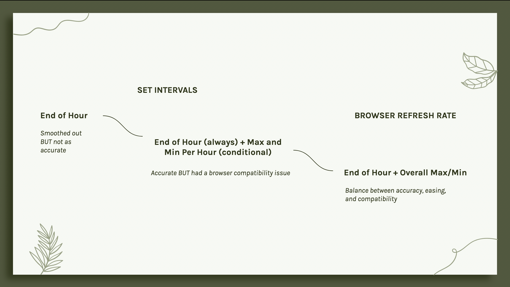

Project Background (Spring 2025)
- A data visualization meant to assist college registrars in analyzing course demand
- Helps answer the question: Do we need to change this class's current capacity?
- Allows for comparison of enrollment, waitlist, and open seats
- Plus key registration events such as maximum enrollment and maximum waitlist amounts
- Emphasis on the current term
My Contributions (Summer 2025)
- Implementing a new feature to analyze prior terms
- Animating the bullet chart: displaying data in real time throughout a registration period
- Adding a line chart: supplemental information to convey how registration changed over time
- Allowing for different methods of user interaction
- Play and pause feature
- Click and drag (scrubbing) feature
What I Learned:
How to create complicated animations on web platforms.
How to accurately summarize complex data.
How HTML and CSS can effectively interact with D3.JS to create visualizations.
And finally - how to implement a multi-step project in a professional code stack.
Visual Guide
MUST HAVE
- Bar graph that starts on first day of enrollment and reacts over time
- Animates in real time - key frame is hours over the registration period, not events
- Line chart drawn directly underneath bar graph
- Synchronized with bar graph as it animates
- Ability for user to click on any point in the line graph, and have the corresponding enrollment/waitlist values reflected in bar graph
COULD HAVE
- Flexibility for user to interact with the animation before it finishes- pausing, playing, viewing certain windows of time, etc.
- Scrubbing - Click and drag feature for line chart toolip, with bar chart animating accordingly
- Indication of key dates and events (ex. Peak Enrollment and Waitlist) that are drawn as the animation plays out
SHOULD HAVE
- Smooth, aesthetically pleasing animations that are also accurate to the data
- Aspect that accounts for user overwhelm
- Playing animation as an optional feature that users can choose to view
- Multiple different ways to interact with an unfamiliar interface
- Replay functionality
PART 1:
FAMILIARIZATION
- Controlling options for clients' differing student information system (SIS) data
- Peak (max) enrollment vs previous (start of term) enrollment
- Styling changes between form values
- Adding text backgrounds dynamically to keep information legible
- Implementing new previous terms options
- Outcomes
- A strong familiarity with the course-demand interface, data visualization, and general styling
PART 2:
PROTOTYPING
- Animated stacked bar chart + synchronized line chart
- Chose hours as keyframes
- Day-by-day: simpler, but less descriptive
- Hour-by-hour: more descriptive for clients
- How to handle multiple events within the hour?
- Use of summary statistics
- ALWAYS transition to end-of-hour value
- Transition to maximum IF it's higher than end-of-hour value
- Transition to minimum IF it's lower than start-of-hour value
- Use of JavaScript's SetInterval method for each hour
- Outcomes
- A valuable starting point for my animation
- But an incomplete solution for what was needed
Note: Stats generalized based on given dataset
How to animate a 10-second animation accurately when the key frame must be the hour?
Prototype's animation approach just wasn't cutting it: smooth on Edge/Chrome, but not on Firefox and not across machines.
SetInterval's timing was subjective and inconsistent, and I was using it for both discrete data (the bar chart) and continuous data (the line chart) - a mistake.
PART 3:
PROBLEM-SOLVING
- Approaching the animation in a different way
- Bar Chart: Using browser refresh rate (not SetInterval) for better efficiency and compatibility
- Line Chart: Using a single duration
- Animating line itself - not proportional with hours on x-axis
- Peaks/falls would slow it down
- Instead - white rectangle covers line chart and gradually unveils
- Proportional over time, synchronizes with bullet chart
- Outcomes
- A much more accurate and smooth animation
- Compatibility across browsers and devices

PART 4:
INTEGRATING AND REVISING
- Integrating prototype into bullet chart styling
- Incorporating interactive features
- Play/pause functionality
- Dynamic tooltips
- Snapping and scrubbing
- One a Must Have, one a Could Have
- Outcomes
- A fully functioning feature implementation
PART 5:
CREATIVE REIGN
- Adding my own revisions and flair - including a demand analysis donut chart
- Interface has a lot of data displayed over time, but is lacking of proportional summary data
- Donut charts (when used correctly) can be a valuable asset in this regard
- Donut chart takes data from previous terms
- Displays proportion of terms where waitlist was greater than open seats (high demand) vs not (sufficient demand)
- Use of existing UI - green success color for lower demand, red warning color for high demand
- Outcomes
- My own personalized addition to the course-demand interface